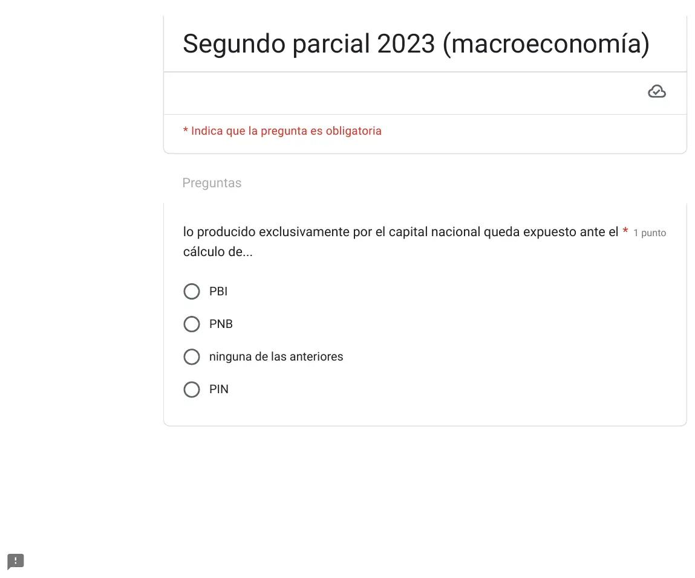
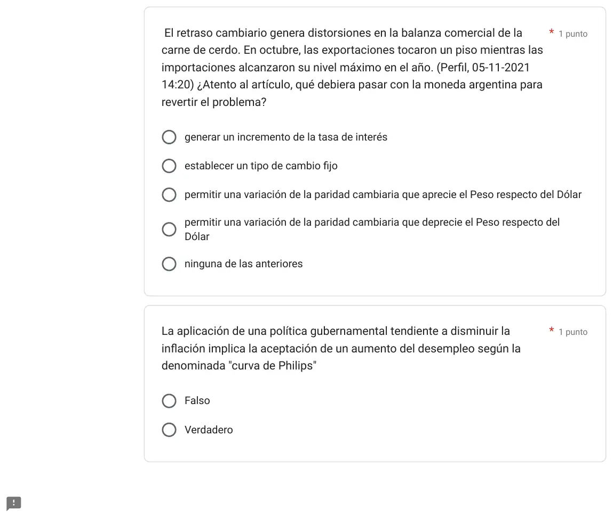
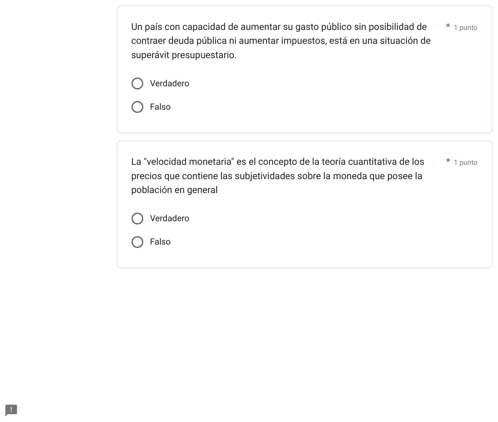
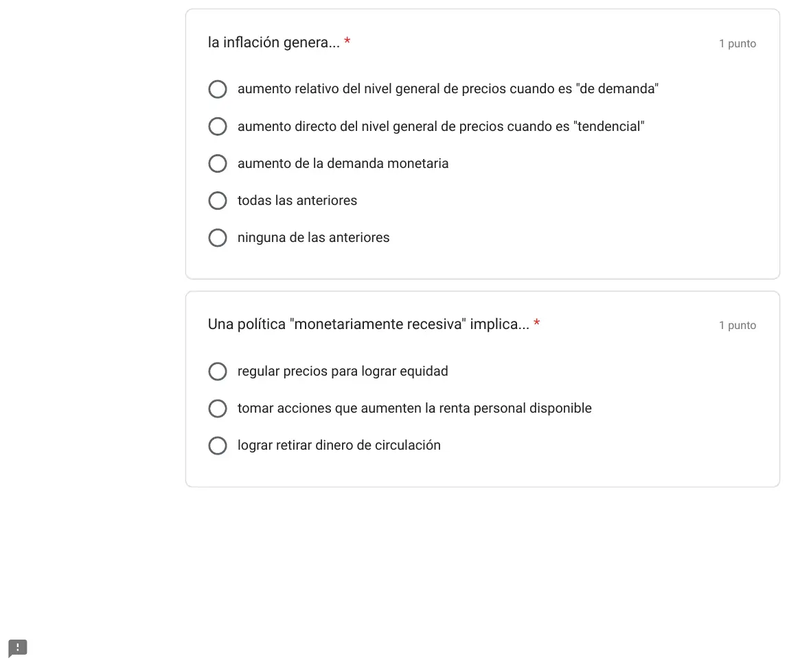
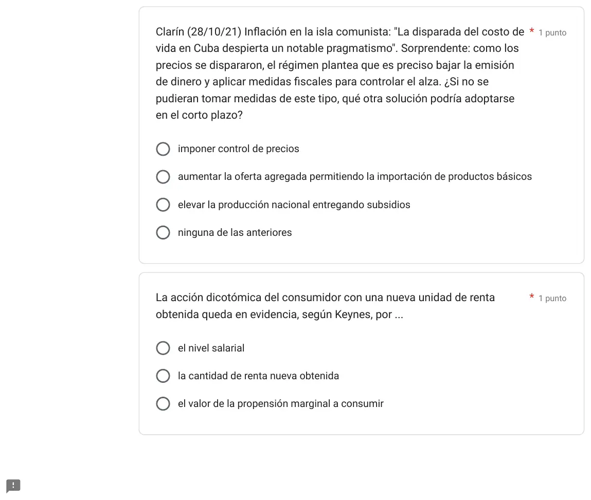
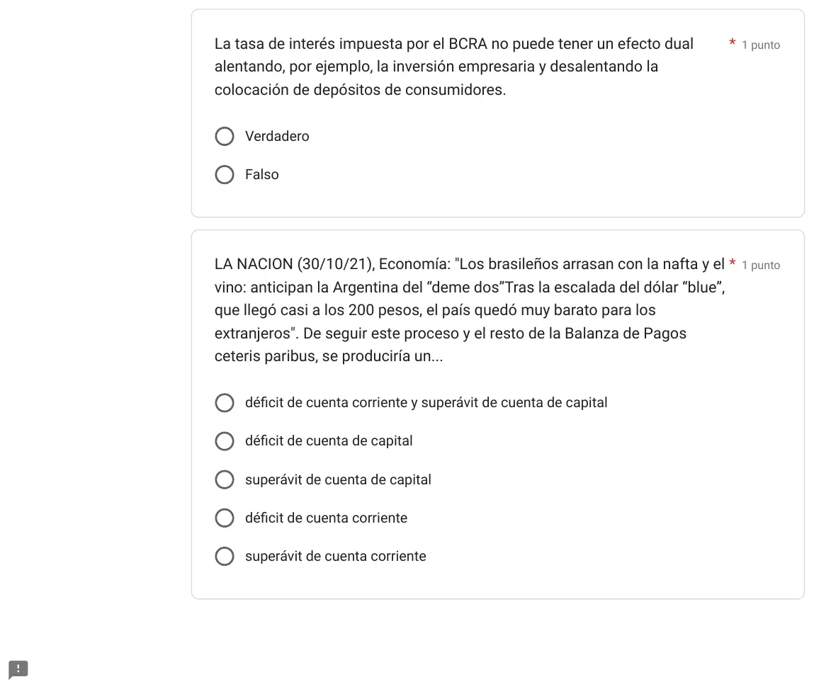
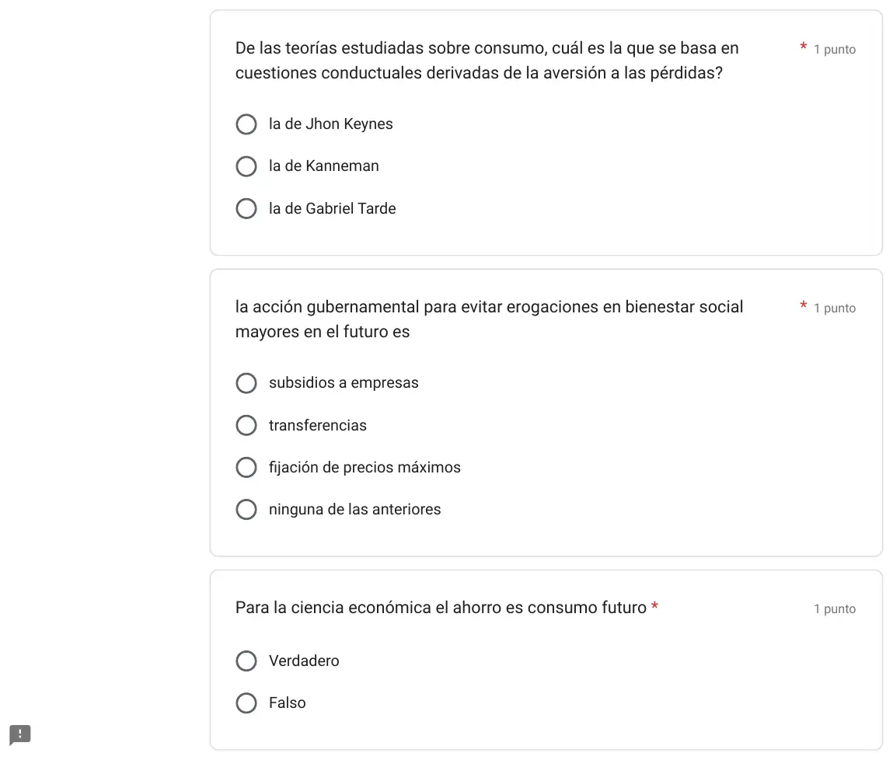
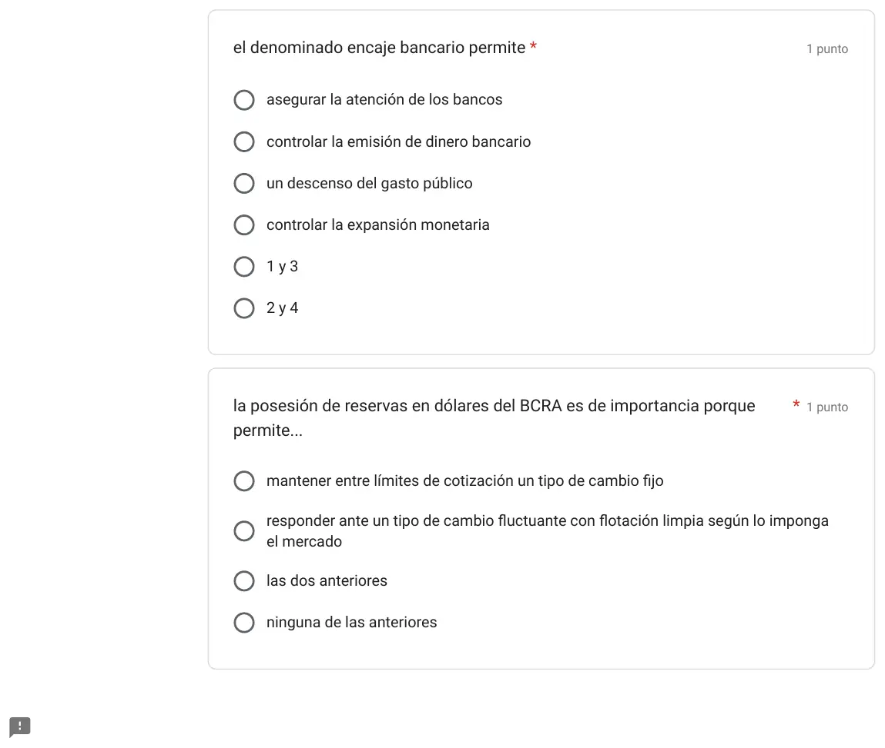
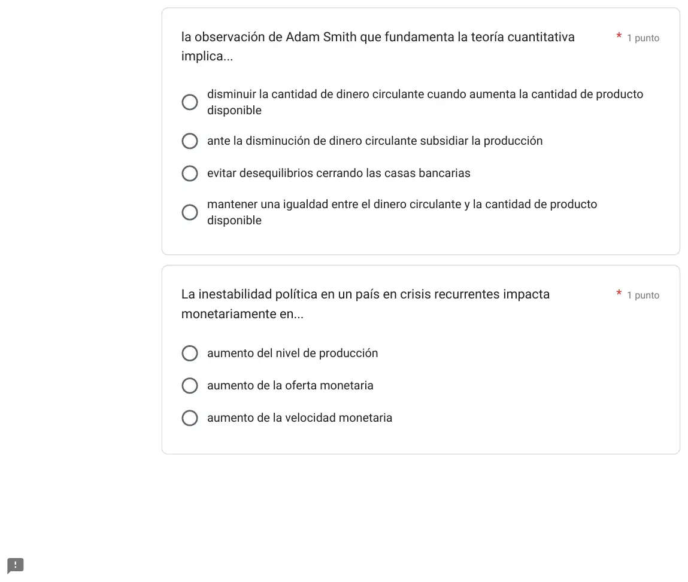
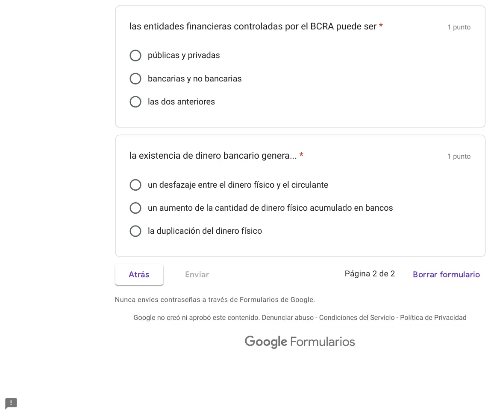

2° parcial, 06/10/2023
2° parcial, 06/10/2023
Enunciado




















Preguntas con opciones
Salen de este examen, adaptadas. Dejalas para el final, porque las opciones pueden dar pistas.
- 1
La teoría de consumo que se apoya en la aversión a las pérdidas es la de...
Se tomó: 2° parcial 06/10/2023, adaptada
Los individuos les dan más valor a las pérdidas que a las ganancias.
Propuesta de respuesta
Respuesta no verificada. La propuso Luta Studios con inteligencia artificial y ningún docente la revisó. Puede tener errores.
En el orden de la hoja. Cada respuesta dice de qué página del apunte sale. Donde dice «sin apunte» o «sin respuesta en el apunte», el compilado de la cátedra no lo contesta y va la opción más defendible.
- Lo producido exclusivamente por el capital nacional queda expuesto ante el cálculo de... PNB. Es el valor de lo producido por factores de propiedad nacional, en el país o afuera, durante un período. Fuente: libro, pág. 33, en el compilado.
- Noticia de Perfil (05/11/2021). El retraso cambiario genera distorsiones en la balanza comercial de la carne de cerdo, con exportaciones en un piso e importaciones en su máximo. ¿Qué debiera pasar con la moneda argentina para revertir el problema? Permitir una variación de la paridad cambiaria que deprecie el Peso respecto del Dólar. Con retraso cambiario el peso está caro, y las exportaciones bajan mientras suben las importaciones. El libro dice que un aumento del tipo de cambio real, una depreciación, mejora la balanza comercial. Fuente: libro, págs. 179 y 180, en el compilado.
- La aplicación de una política gubernamental tendiente a disminuir la inflación implica la aceptación de un aumento del desempleo según la denominada «curva de Philips». Verdadero. La curva sugiere que es imposible tener a la vez un alto nivel de empleo y una baja inflación. Bajar la inflación se paga con más desempleo. Fuente: compilado, pág. 70.
- Un país con capacidad de aumentar su gasto público sin posibilidad de contraer deuda pública ni aumentar impuestos, está en una situación de superávit presupuestario. Verdadero. Hay superávit cuando lo que se recauda supera lo que se gasta, . Con ese sobrante el Estado puede gastar más sin endeudarse ni subir impuestos. Fuente: libro, págs. 84 y 85, en el compilado.
- La «velocidad monetaria» es el concepto de la teoría cuantitativa de los precios que contiene las subjetividades sobre la moneda que posee la población en general. Verdadero. La velocidad mide cuántas veces por año se gasta cada unidad monetaria, y eso depende de cómo ve la gente su moneda. Con hiperinflación, según la tabla del apunte, la gente se desprende del dinero líquido antes de que pierda más valor. Fuente: compilado, págs. 61, 62 y 65.
- La inflación genera... Aumento de la demanda monetaria. La demanda de dinero es de saldos reales. Si los precios suben, hace falta más dinero nominal para comprar lo mismo. Las dos primeras opciones describen el alza de precios, que es la inflación misma. Fuente: compilado, págs. 58 y 63.
- Una política «monetariamente recesiva» implica... Lograr retirar dinero de circulación. Una política restrictiva baja la oferta monetaria, por ejemplo vendiendo valores o subiendo el encaje. Así sube la tasa y se frena la demanda agregada. Fuente: compilado, págs. 59 a 61, y soluciones de la cátedra de los finales del 07/08/2015 y del 12/02/2016.
- Noticia de Clarín (28/10/21) sobre la inflación en Cuba. El régimen plantea bajar la emisión y aplicar medidas fiscales. ¿Si no se pudieran tomar medidas de este tipo, qué otra solución podría adoptarse en el corto plazo? Aumentar la oferta agregada permitiendo la importación de productos básicos. Bajar la emisión y las medidas fiscales atacan la demanda. Si no se puede, queda que la oferta alcance a la demanda. En la inflación de demanda la producción no puede seguirla, e importar suma oferta enseguida. Los subsidios son una medida fiscal, y un control de precios es un precio máximo, que genera escasez según las soluciones de la cátedra. Fuente: compilado, págs. 42, 66 y 67.
- La acción dicotómica del consumidor (consumir o ahorrar) con una nueva unidad de renta obtenida queda en evidencia, según Keynes, por... El valor de la propensión marginal a consumir. Marca qué parte de cada peso extra de renta se consume. El resto se ahorra, con . Fuente: libro, págs. 66 y 67, en el compilado.
- La tasa de interés impuesta por el BCRA no puede tener un efecto dual alentando, por ejemplo, la inversión empresaria y desalentando la colocación de depósitos de consumidores. Falso. Una misma tasa tiene los dos efectos a la vez. Si el BCRA la baja, poner la plata en el sistema financiero rinde menos. Por eso a los empresarios les conviene invertir, y a los consumidores depositar les conviene menos. Fuente: compilado, pág. 60.
- Noticia de LA NACION (30/10/21) sobre los brasileños que compran nafta y vino con el dólar «blue» cerca de los 200 pesos. De seguir este proceso y el resto de la Balanza de Pagos ceteris paribus, se produciría un... Superávit de cuenta corriente. Lo que compran los brasileños acá entra como exportación de mercaderías, en la balanza comercial, o como ingreso por turistas, en viajes. Las dos están en la cuenta corriente. Con el resto de la balanza constante, la cuenta corriente pasa a superávit. Fuente: compilado, págs. 47 y 48.
- De las teorías estudiadas sobre consumo, cuál es la que se basa en cuestiones conductuales derivadas de la aversión a las pérdidas? La de Kahneman, formulada con Tversky. Los individuos les dan más valor a las pérdidas que a las ganancias. El gráfico del apunte la resume «por aversión a la pérdida». Fuente: compilado, págs. 17 y 18.
- La acción gubernamental para evitar erogaciones en bienestar social mayores en el futuro es... Subsidios a empresas. Sin respuesta en el apunte. Es la única opción que actúa antes, sosteniendo la producción y el empleo, para que después no haga falta más gasto social. Las transferencias ya son gasto, el que resta la fórmula del superávit.
- Para la ciencia económica el ahorro es consumo futuro. Verdadero. Sin apunte de la cátedra. Lo que no se consume se ahorra, , y queda para consumir más adelante.
- El denominado encaje bancario permite... 2 y 4. El encaje limita cuánto dinero bancario crean los bancos. Subirlo es política restrictiva, corre la oferta monetaria a la izquierda y encarece la tasa. Bajarlo la expande. Fuente: compilado, pág. 51, y soluciones de la cátedra de los finales del 07/08/2015 y del 12/02/2016.
- La posesión de reservas en dólares del BCRA es de importancia porque permite... Mantener entre límites de cotización un tipo de cambio fijo. El cambio fijo necesita reservas para intervenir. La segunda opción habla de flotación limpia, en la que el Banco Central se mantiene al margen y no las necesita. Fuente: compilado, págs. 52 a 54, y libro, pág. 170.
- La observación de Adam Smith que fundamenta la teoría cuantitativa implica... Mantener una igualdad entre el dinero circulante y la cantidad de producto disponible. En la teoría cuantitativa, . Si el dinero crece más que el producto, suben los precios. La primera opción va al revés, porque con más producto hace falta más dinero. Fuente: compilado, págs. 61 y 62.
- La inestabilidad política en un país en crisis recurrentes impacta monetariamente en... Aumento de la velocidad monetaria. Con crisis y desconfianza, la gente se desprende del dinero antes de que pierda valor, como en la hiperinflación de la tabla del apunte. Cada peso se gasta más veces por año. Fuente: compilado, págs. 61, 62 y 65.
- Las entidades financieras controladas por el BCRA pueden ser... Las dos anteriores. El apunte las divide en bancarias y no bancarias, y las dos están bajo la tutela del Banco Central. Entre las bancarias hay públicas y privadas. Fuente: compilado, págs. 50 y 51.
- La existencia de dinero bancario genera... Un desfazaje entre el dinero físico y el circulante. Además de los billetes y monedas que emite el Banco Central, los bancos crean dinero bancario, y la oferta de dinero suma los dos. Por eso circula más dinero que el físico. Fuente: compilado, págs. 50, 51 y 58.
Respuesta no verificada. Puede tener errores.
Se armó con el resumen del 2° parcial de esta materia, con las citas del compilado de la cátedra y del libro de Dornbusch y Fischer que trae cada sección, y las soluciones de la cátedra de los finales del 07/08/2015 y del 12/02/2016 para el encaje.
Quedó en duda: En la 2, el compilado se contradice en este punto (pág. 54), y la página lo avisa; en la 4, la consigna dice «sin posibilidad de contraer deuda», y se leyó como «sin necesidad»; en la 5, el apunte no habla de subjetividades; en la 6, en 2024 y 2025 la consigna volvió con otras opciones, todas con «porque es de saldos reales». Puede que en 2023 la cátedra quisiera «todas las anteriores»; en la 8, no hay solución de la cátedra, y un control de precios también es de corto plazo; en la 10, la página avisa que esta respuesta no está en el apunte; en la 11, no hay solución de la cátedra en el Drive; en la 13, la página avisa que el Drive no tiene una respuesta de la cátedra. Es la opción más defendible, no una segura; en la 14, la página avisa que la frase no está en el apunte; en la 15, la definición de encaje no está en el compilado; en la 16, «entre límites» es más de la flotación dirigida que del cambio fijo, pero las dos necesitan reservas; en la 17, el compilado no cuenta la observación de Smith, y la respuesta sale de la fórmula; en la 18, el apunte no trata la inestabilidad política. Si la cátedra piensa en un gobierno que emite para cubrir la crisis, sería la oferta monetaria; en la 19, el apunte solo da la división en bancarias y no bancarias. Si la cátedra la quiere textual, es esa; en la 20, el apunte no explica cómo se crea el dinero bancario.
¿Cómo te fue?
Marcá cada tema del examen. Las preguntas con opciones ya se corrigieron solas.
- ProductoActores y factores de producción, en 1° parcial
- Balanza de pagosBalanza de pagos, en 2° parcial
- DineroDinero, en 2° parcial
- InflaciónTipos de inflación, en 2° parcial
- ConsumoConsumo e inversión, en 2° parcial